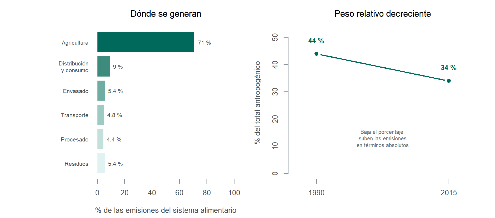

8 Biotecnología y medio ambiente
La relación entre biotecnología y medio ambiente admite dos lecturas que conviene no confundir. En la primera, la biotecnología forma parte del problema: la agricultura industrial que ha permitido alimentar a ocho mil millones de personas es también una de las actividades humanas con mayor impacto sobre el suelo, el agua y la biodiversidad. En la segunda, forma parte de la respuesta: biorremediación, biosensores, cultivos adaptados, conservación asistida de especies amenazadas.
Este apartado sostiene que ambas lecturas son correctas y que el error habitual consiste en elegir una. La pregunta útil no es si la biotecnología ayuda o perjudica, sino qué parte del problema puede resolver, con qué grado de evidencia y en qué escala de tiempo —y qué queda fuera de su alcance por mucho que mejore la técnica. Ese ejercicio de acotación es el objeto de las páginas que siguen.
8.1 Huella ambiental de los sistemas agroalimentarios
La agricultura es una de las actividades humanas con mayor impacto ambiental por uso de suelo y consumo de agua. Toda la actividad y la energía necesarias para atender la creciente demanda de alimentos y materias primas de una población en aumento y con mayores expectativas de consumo son responsables de una fracción muy considerable de las emisiones antropogénicas de gases de efecto invernadero.
La estimación más citada procede de la base de datos EDGAR-FOOD, que desglosa por primera vez las emisiones de cada etapa de la cadena alimentaria: los sistemas alimentarios generaron 18 Gt de CO₂ equivalente en 2015, el 34 % del total antropogénico. Un 71 % de esa cifra corresponde a la agricultura y a los cambios de uso del suelo asociados; el resto se reparte entre transporte, comercio, envasado, procesos industriales y gestión de residuos (Crippa et al., 2021). Conviene retener la composición, no solo el total: el problema no está donde el debate público suele situarlo —el transporte de alimentos, el célebre argumento de los «kilómetros del plato»— sino en la producción primaria y en el uso del suelo.
El panel derecho de la Figura 8.1 exige una advertencia de lectura que resulta instructiva por sí misma. El peso relativo de los sistemas alimentarios ha bajado del 44 % al 34 % entre 1990 y 2015, y sería un error celebrarlo: las emisiones alimentarias han aumentado en términos absolutos durante todo ese periodo. El porcentaje desciende porque otras fuentes han crecido más deprisa. Es un ejemplo limpio de cómo un indicador relativo puede sugerir lo contrario de lo que ocurre, y conviene tenerlo presente al leer cualquier cifra de reparto.
8.1.1 Suelo, agua y la fiabilidad de las cifras
Sobre el uso de recursos, las magnitudes habitualmente citadas son que la agricultura ocupa cerca del 40 % de la superficie terrestre libre de hielo y consume en torno al 70 % del agua dulce extraída (Organización de las Naciones Unidas para la Alimentación y la Agricultura, 2025). Las proyecciones de referencia para 2050 estiman una demanda de un 50 % más de alimentos, un 40 % más de agua y un 50 % más de energía que en 2012.
Aquí conviene detenerse, porque el dato del agua ofrece una lección metodológica de primer orden para estudiantes que van a manejar literatura de este tipo. Un análisis de redes de citación sobre 3.500 documentos rastreó las cadenas bibliográficas de dos afirmaciones omnipresentes —que el regadío aporta el 40 % de la producción mundial de alimentos y consume el 70 % del agua dulce extraída— y encontró que entre el 60 y el 80 % de esas cadenas terminan en fuentes que no contienen datos de respaldo, o que ni siquiera contienen las cifras. Solo un 1,5 % de los documentos citados como apoyo aporta datos originales. Cuando se calculan los intervalos con los datos realmente disponibles, las dos cifras pasan a ser rangos de 18-50 % y 45-90 % respectivamente (Puy et al., 2025).
NotaNota metodológica (bajo enfoque CTS)
Que una cifra tenga una cadena de citación débil no significa que sea falsa. El orden de magnitud del 70 % es coherente con los balances hídricos regionales medidos, y la propia FAO publica estimaciones nacionales verificables que lo sostienen en promedio: el valor cae dentro del intervalo 45-90 %, solo que muy lejos de su centro. El hallazgo muestra que una cifra puede circular durante décadas por repetición institucional más que por verificación, que la frecuencia con que se cita un dato no es indicador de su solidez, y que un valor puntual repetido oculta sistemáticamente el intervalo del que procede.
El ejercicio útil no es descartar la cifra, sino preguntarse cuántas de las que uno maneja habitualmente resistirían el mismo rastreo. Compárese con el análisis de autoridad epistémica del Capítulo 2.
La reducción constatada de recursos naturales —agua, suelo, biodiversidad— limita la capacidad productiva de los sistemas agrícolas, y el proceso se ve reforzado por el cambio climático y por la mayor frecuencia e intensidad de sequías, inundaciones, plagas y enfermedades. A esto se suman cambios en los patrones de consumo, con un aumento de la demanda de alimentos de origen animal que incrementa las emisiones y dificulta la gestión sostenible de los recursos.
Estos factores combinados amenazan, en muchas regiones y no solo en las áridas, la seguridad alimentaria y la provisión de servicios ecosistémicos. El informe del IPCC de 2019 sobre uso del suelo enfatiza el papel de la biotecnología agrícola para reducir el impacto ambiental mediante la mejora de la eficiencia en el uso de recursos, la reducción de pérdidas y desperdicios, la adaptación y mitigación, y la conservación y restauración de ecosistemas (Melgarejo et al., 2014).
Pese a los márgenes de incertidumbre de los modelos, el nivel de riesgo dependerá de cómo evolucionen los patrones de población, consumo, producción, desarrollo tecnológico y gestión de la tierra. Con mejoras tecnológicas muy limitadas en los rendimientos, la mayor demanda de alimentos, piensos y agua incrementará el riesgo de escasez hídrica en tierras áridas, la degradación del suelo y la inseguridad alimentaria. A la misma conclusión se llega considerando que las zonas climáticas aptas para la agricultura se desplazarán hacia los polos en latitudes medias y altas, lo que aumentará las perturbaciones en los bosques boreales —sequías, incendios, brotes de plagas—. En las regiones tropicales, bajo escenarios de emisiones medias y altas, se prevé la aparición de fenómenos sin precedentes.
La contaminación de suelos y cursos de agua por uso excesivo de fertilizantes y pesticidas es otro impacto a considerar, junto con la pérdida de biodiversidad asociada a los monocultivos y a la conversión de hábitats naturales en tierras agrícolas. Los factores de riesgo combinados ocasionan desnutrición crónica en unos mil millones de personas, en una dinámica agravada por la degradación del suelo y la aceleración de los impactos climáticos. No se podrán satisfacer las necesidades futuras de seguridad alimentaria si la producción no se incrementa sustancialmente al tiempo que se reduce de modo drástico la huella ambiental de la agricultura. Como señalan Foley y colaboradores, importa conocer las «brechas de rendimiento» y dónde se dan las condiciones para aumentar la eficiencia de los cultivos, además de incidir en el cambio de dietas y la reducción de desperdicios (Foley et al., 2011).
8.1.2 La restricción que ninguna tecnología elimina
Conviene cerrar este apartado con el resultado cuantitativo más útil de la literatura, porque delimita con precisión el margen de lo tecnológicamente resoluble.
Gerten y colaboradores calcularon cuántas personas puede alimentar el planeta sin transgredir cuatro límites planetarios terrestres —uso de agua azul, flujos de nitrógeno, integridad de la biosfera y cambio de uso del suelo—. El resultado tiene dos caras. En las condiciones actuales de producción y distribución, el sistema alimentario difícilmente podría proporcionar una dieta equilibrada de 2.355 kcal diarias a más de 3.400 millones de personas dentro de esos límites. Con cambios hacia patrones de producción y consumo más sostenibles, la cifra asciende a casi 10.000 millones (Gerten et al., 2020).
El salto entre ambas cifras es enorme, y esa es la buena noticia. Pero conviene mirar de qué está hecho: redistribución espacial de las tierras de cultivo, gestión mucho más ajustada de agua y nutrientes, reducción del desperdicio y cambios en la dieta. De los cuatro componentes, solo dos son primariamente tecnológicos. Los otros dos son problemas de organización social, precios relativos y hábitos alimentarios. Cualquier discurso que presente la brecha entre 3.400 y 10.000 millones como un problema de innovación está describiendo, en el mejor de los casos, la mitad del asunto.
8.2 Biorremediación y biotecnología ambiental aplicada
La Uso de microorganismos, plantas o enzimas para descontaminar ambientes afectados por contaminantes tóxicos o peligrosos. emplea microorganismos, enzimas y plantas para descontaminar suelos y aguas afectados por metales pesados, hidrocarburos, plásticos y otros contaminantes. Es el campo donde las expectativas depositadas en la biotecnología ambiental son mayores y donde, por eso mismo, conviene ser más cuidadoso al separar lo demostrado de lo prometido.
8.2.1 Qué funciona y a qué escala
| Aplicación | Estado | Escala demostrada | Limitación principal |
|---|---|---|---|
| Degradación de hidrocarburos | Uso operativo | Vertidos localizados; suelos contaminados | Eficacia muy dependiente de temperatura, oxígeno y nutrientes del medio |
| Fitorremediación de metales | Uso operativo | Parcelas y balsas; años por ciclo | Lentitud; el metal se concentra en biomasa que hay que gestionar |
| Tratamiento de aguas residuales | Industria madura | Global, décadas | No es «nueva» biotecnología: es el caso de éxito que se olvida |
| Biosensores ambientales | Comercial y en desarrollo | Detección de toxinas y patógenos | Validación en matrices ambientales reales |
| Degradación enzimática de PET | Investigación avanzada | Laboratorio y planta piloto | Ninguna estrategia adoptada aún a escala industrial |
| Captura biológica de CO₂ | Investigación | Cultivos y microalgas | Balance energético y de superficie del proceso completo |
Las bacterias optimizadas para degradar hidrocarburos son el ejemplo mejor documentado. La remediación microbiana en condiciones aerobias se ha desarrollado con rapidez, pero su eficacia se ve reducida por numerosos factores ambientales que dificultan la aplicación práctica a la escala requerida frente a vertidos y accidentes cada vez más frecuentes, consecuencia del aumento de la población y de tecnologías industriales y de transporte dependientes del consumo intensivo de combustibles fósiles (Singh y Ward, 2004; Xu et al., 2018).
El caso de las enzimas degradadoras de PET merece atención por lo que enseña sobre el ciclo de expectativas. Desde el descubrimiento de la PETasa de Ideonella sakaiensis en 2016, la ingeniería de proteínas ha producido variantes considerablemente más eficientes y termoestables, y el campo dispone ya de guías de estandarización metodológica. Y sin embargo, la revisión más reciente concluye sin ambigüedad que ninguna de las estrategias propuestas ha sido adoptada todavía a escala industrial (Ermis, 2025). Los obstáculos son conocidos y no se resuelven mejorando la enzima: compromiso entre estabilidad y actividad, residuo plástico mezclado en lugar de PET puro, inhibición por producto, viabilidad tecnoeconómica frente al PET virgen, y los requisitos de bioseguridad aplicables a la liberación de organismos modificados.
La lección no es que la técnica no sirva. Es que el cuello de botella dejó de ser biológico hace tiempo y pasó a ser económico y regulatorio, exactamente como ocurre con las terapias del Capítulo 4 y con el cribado embrionario de Sección 5.3. Es una regularidad ilustrada de varias maneras a lo largo del texto: cuando una biotecnología no llega, rara vez es porque la biología no funcione.
8.2.2 Otras líneas con recorrido
Conservación de especies amenazadas. La criopreservación de gametos y la incorporación de genes de resistencia pueden ser útiles en iniciativas dirigidas a preservar especies amenazadas o a evitar la pérdida de cientos de especies de anfibios que sucumben al hongo Batrachochytrium dendrobatidis, incluida la caracterización de bacterias inhibidoras del patógeno presentes en las propias poblaciones de anfibios (Madison et al., 2017). Pero es improbable que estas técnicas terminen con los procesos de intercambio de especies que han extendido la infección a Europa y a México: la rana de uñas africana (Xenopus laevis), portadora del hongo, es muy utilizada en laboratorio y se exporta desde África por toneladas. El vector del problema es comercial, y una solución biológica no lo alcanza.
Agricultura sostenible. La biotecnología puede impulsar cultivos resistentes a sequía, frío y salinidad, o más eficientes en el uso de nitrógeno, y potenciar la capacidad de plantas y microbios de fijar CO₂ atmosférico como biomasa. Con frecuencia, sin embargo, la calidad y la cantidad de la cosecha dependen menos del genotipo que de la capacidad de monitorizar necesidades y ajustar agua y nutrientes.
Biosensores. Los Dispositivos que utilizan componentes biológicos para detectar y medir sustancias específicas en el ambiente. —dispositivos basados en enzimas, células enteras, anticuerpos, aptámeros o ADN— permiten detectar toxinas, patógenos y cambios ambientales de forma rápida y precisa (Gavrilaș et al., 2022). Es una línea menos vistosa que la remediación y probablemente más consecuente a corto plazo, porque la gestión ambiental depende críticamente de medir bien y a tiempo, y porque un sensor no requiere liberar nada al medio.
Es obvio, en cualquier caso, que los procesos responsables de la contaminación ambiental —liberación y acumulación de sustancias nocivas por actividad industrial, patrones de urbanización, modelos de desarrollo y transporte no sostenibles— generan tal cantidad y variedad de compuestos, diseminados de forma continua en aire, suelo y agua, que la escala del problema resulta imposible de contrarrestar solo con soluciones biotecnológicas.
8.3 Límites planetarios, biodiversidad y riesgo de extinción
En el debate público sobre las biotecnologías y sus aplicaciones agrícolas importa considerar el trasfondo de problemas en los que el factor tecnológico puede ayudar a afrontar desafíos sin precedentes. La incertidumbre sobre los efectos a largo plazo de ciertas prácticas no exime de analizar con rigor la gravedad de la situación de partida ni las dificultades para garantizar una distribución equitativa de beneficios a los que gran parte de la población mundial no tiene acceso.
8.3.1 El marco y su estado actual
El periodo de relativa estabilidad ambiental que caracterizó el Holoceno se ha visto alterado por la acción humana hasta el punto de sobrepasar los Umbrales críticos en sistemas terrestres que, si se superan, pueden llevar a cambios ambientales irreversibles. en varios indicadores clave que definen la franja de seguridad para el desarrollo de la humanidad (Rockström et al., 2009).
Conviene entender qué tipo de construcción es el marco de límites planetarios, porque se malinterpreta con facilidad. No es una predicción ni un pronóstico de catástrofe: es una propuesta de indicadores con umbrales estimados, cuyo rebasamiento indica un aumento del riesgo de cambios no lineales, no la certeza de que vayan a producirse. Sus propios autores lo presentan como una herramienta para acotar un espacio operativo seguro, con incertidumbres explícitas en cada variable.
Dicho esto, la evolución de la evaluación es inequívoca. En 2009 se estimaron tres límites transgredidos; la revisión de 2023 elevó la cuenta a seis de nueve (Richardson et al., 2023); y la evaluación de 2025 sitúa en siete los límites rebasados, al incorporar la acidificación oceánica. Solo el agotamiento del ozono estratosférico y la carga de aerosoles permanecen dentro de la zona segura, y los siete transgredidos muestran tendencias que empeoran (Planetary Boundaries Science Lab y Potsdam Institute for Climate Impact Research, 2025).
Cómo leer la Figura 8.2 sin sacar la conclusión equivocada. Una parte del ascenso refleja deterioro real; otra parte refleja que se han desarrollado métricas para variables que antes no se sabían cuantificar —el caso de las entidades novedosas, que abarca contaminantes sintéticos, plásticos y compuestos químicos de nueva síntesis (Persson et al., 2022)—. Distinguir cuánto hay de cada cosa no es un detalle académico: un indicador que empeora porque medimos mejor exige una respuesta distinta de uno que empeora porque el sistema se degrada, aunque ambos justifiquen actuar.
8.3.2 El escenario de riesgo y cómo hablar de él
El escenario de riesgo se ha subestimado muy probablemente, si se tiene en cuenta que muchos subsistemas terrestres reaccionan de forma abrupta, y no lineal, cuando se sobrepasan ciertos umbrales. Superado el margen de seguridad, subsistemas importantes como el monzónico pueden experimentar algo semejante a un cambio de estado, con consecuencias potencialmente desastrosas para los asentamientos humanos en zonas de riesgo (Steffen et al., 2018).
Desde 1992, miles de científicos de todo el mundo han lanzado advertencias sobre el fracaso de la humanidad para afrontar los desafíos ambientales con medidas ajustadas a la gravedad de los indicadores (Ripple et al., 2017). Informes complementarios coinciden en señalar que la actividad humana ha desencadenado un evento de extinción masiva, el sexto en unos 540 millones de años.
AdvertenciaSobre el uso pedagógico de este material
Este apartado maneja el contenido más difícil de tratar de toda la monografía, y no por su complejidad técnica. La literatura de advertencia ambiental cumple una función legítima —documentar la distancia entre lo que sabemos y lo que hacemos— pero su traslación docente tiene efectos conocidos y contraproducentes. La insistencia en escenarios catastróficos sin vías de acción asociadas produce con más frecuencia desconexión que movilización, sobre todo entre destinatarios con menos experiencia y conocimiento de fondo.
En una estrategia de comunicación pública conviene tener presente tres cautelas antes de utilizar este tipo de material:
- Separar el diagnóstico del pronóstico. «Siete límites transgredidos» es un diagnóstico verificable. «El colapso es inevitable» no es una conclusión que se siga de él, y los propios autores del marco insisten en que el margen de actuación sigue abierto.
- Distinguir irreversible de irremediable. Algunos procesos no revertirán en escalas humanas —la extinción de una especie, la fusión de una capa de hielo—. De ahí no se sigue que la magnitud del daño esté determinada: prácticamente todos los indicadores admiten grados, y la diferencia entre grados es donde se juega la política ambiental.
- Emparejar cada dato con un actor. Un indicador sin agente identificable es información desmovilizadora. La pregunta que convierte este apartado en material de trabajo no es «¿qué va a pasar?», sino «¿quién decide qué, y con qué información?».
El caso de los CFC, que se examina a continuación, es el mejor antídoto disponible contra el fatalismo, y por eso se incluye aquí y no como apéndice.
8.3.3 El precedente que demuestra que se puede
Los acuerdos internacionales que lograron la estabilización de la capa de ozono estratosférico constituyen la excepción en esta dinámica, y merecen más atención de la que suelen recibir. La reducción del uso mundial de CFC y otras sustancias dañinas en casi un 95 % en apenas una década mostró que la comunidad científica y los gestores políticos de distinto signo pueden cooperar para proteger bienes comunes globales (Parson, 2003).
Merece la pena examinar por qué funcionó, porque las condiciones son identificables: un problema con un mecanismo causal claro y un número reducido de sustancias implicadas; sustitutos técnicos disponibles a coste asumible; un conjunto acotado de empresas productoras; y una señal observable —el agujero antártico— que hizo el problema visible y difícil de negar. Ninguna de esas cuatro condiciones se cumple en el caso del clima, y compararlos sin advertirlo produce falsas expectativas. Pero el precedente conserva su valor, y demuestra que el obstáculo no es la imposibilidad de la cooperación internacional en sí misma.
La evolución del resto de indicadores —temperatura superficial, pérdida de hielo en la Antártida, el Ártico, Groenlandia y los glaciares, temperatura, acidez y nivel del océano, superficie quemada, fenómenos meteorológicos extremos— solo admite interpretaciones en clave de amenaza ecológica y sociopolítica. La conclusión de la comunidad académica y de las instituciones que la representan en foros internacionales es que estamos comprometiendo nuestro futuro por el consumo de materiales y el crecimiento demográfico, en ausencia de iniciativas eficaces y prioritarias para reducir emisiones, incentivar la energía renovable, proteger hábitats, restaurar ecosistemas y frenar la contaminación.
NotaEstudio de caso: límites planetarios y riesgo de extinción
Obras de referencia sobre los límites del crecimiento y la crisis ecológica, útiles como lecturas de contexto:
- Kolbert, E. (2019). La sexta extinción: una historia nada natural.
- Lovelock, J. (2007). La venganza de la Tierra.
- Wilson, E. O. (2002). El futuro de la vida.
- Wackernagel, M. (2001). Nuestra huella ecológica: reduciendo el impacto humano sobre la Tierra.
- World Scientists’ Warnings to Humanity, iniciativa que agrupa los sucesivos avisos desde 1992.
Indicadores para cuantificar el impacto ambiental: huella hídrica de la producción agrícola (m³/t), intensidad de emisiones (kg CO₂-eq/kg de producto) e índice de biodiversidad en paisajes agrícolas.
Figuras de referencia. Las siguientes son las figuras originales de los artículos citados. Se enlazan en lugar de reproducirse, para respetar las condiciones de licencia de cada editorial:
- Indicadores ambientales globales desde 1960, en Ripple et al. (2017), figura 1. Artículo en acceso abierto (BioScience, Oxford).
- Cascadas de puntos de vuelco y trayectoria del sistema Tierra fuera del Holoceno, en Steffen et al. (2018), figuras 2 y 3. Artículo en acceso abierto (PNAS).
- Cuantificación del límite planetario para entidades novedosas, en Persson et al. (2022), figura 3. Artículo en acceso abierto (Environmental Science & Technology, ACS, licencia CC BY).
- Estado de los nueve límites en 2025, en el Planetary Health Check, con material gráfico de uso libre.
- Informes del IPCC (AR6), FAO, PNUD y UNESCO.
- Escenarios de riesgo y criterios para interpretar las proyecciones.
- Bucles de retroalimentación y subestimación del impacto.
- ¿Es seguro el límite de 1,5 °C? Adviértase que la pregunta mezcla dos cosas: si el umbral es alcanzable y si, alcanzado, sería seguro.
- ¿Es verosímil un escenario de extinción? Distíngase entre extinción de la especie, colapso civilizatorio y pérdida masiva de bienestar: la literatura de riesgo existencial trata los tres como problemas distintos (Tonn y Stiefel, 2014; Turchin y Denkenberger, 2018).
- ¿Qué límites críticos se han sobrepasado y cuáles de esos rebasamientos son irreversibles en escalas humanas?
- ¿Cómo visualizar tendencias y forzamientos sin producir el efecto desmovilizador descrito en Sección 8.3.2? Propóngase una figura concreta y justifíquese la elección.
- El caso del ozono cumplió cuatro condiciones facilitadoras (Sección 8.3.3). ¿Cuántas se cumplen en el problema que cada grupo elija? ¿Qué se seguiría de ello para el diseño de una política?
- ¿Qué papel realista cabe atribuir a la biotecnología en cada uno de los siete límites transgredidos? Constrúyase la respuesta límite por límite, y adviértase en cuántos la respuesta honesta es «ninguno directo».
8.4 Intervención deliberada en ecosistemas: impulsores genéticos y desextinción
Los apartados anteriores describen una biotecnología que reacciona: limpia lo contaminado, mide lo alterado, adapta lo cultivado. Este examina la posibilidad contraria, y de ahí su interés como contrapunto: intervenciones concebidas para modificar deliberadamente la composición de un ecosistema. Son las aplicaciones con mayor potencial transformador del campo y, no por casualidad, las que plantean los problemas de gobernanza más agudos.
8.4.1 Impulsores genéticos
Un Elemento genético diseñado para heredarse con una probabilidad muy superior al 50 % mendeliano, lo que permite propagar un rasgo por una población silvestre en pocas generaciones. Su liberación plantea problemas de reversibilidad y de consentimiento comunitario.Véase también: Principio de precaución es un elemento diseñado para heredarse con una probabilidad muy superior al 50 % mendeliano, de modo que se propague por una población silvestre aunque no confiera ventaja adaptativa —o incluso si la reduce—. La aplicación más avanzada persigue el control de la malaria mediante la modificación de poblaciones de Anopheles gambiae.
Conviene ser preciso sobre el estado real de este programa, porque se describe con frecuencia como inminente y no lo es. Hasta 2025 se han realizado liberaciones de mosquitos modificados sin impulsor genético —variantes estériles o de sesgo de sexo—, concebidas como pasos preparatorios y de aprendizaje regulatorio. La investigación sobre impulsores propiamente dichos avanza en resistencia al sitio diana, perfiles de producto y herramientas de monitorización, pero ninguna liberación de impulsor genético en campo abierto se ha producido.
El horizonte verosímil es, por tanto, de años, no de meses. Y lo que ha determinado ese calendario en el último año no ha sido la técnica, como muestra el caso que cierra este apartado.
8.4.2 Desextinción
La desextinción ocupa el extremo mediático del campo y ofrece, por eso mismo, un ejercicio excelente de calibración de expectativas.
En abril de 2025 se presentaron públicamente tres cánidos descritos en los medios como «lobos huargos desextinguidos». La descripción no resiste el examen. Los animales son lobos grises con una veintena de ediciones dirigidas, algo que la propia responsable científica de la empresa reconoció al señalar que la denominación es un coloquialismo y no un término técnico. El grupo de especialistas en cánidos de la Comisión de Supervivencia de Especies de la UICN los caracterizó como un proxy genético de una especie extinta, no como una desextinción, apoyándose en su propia definición de 2016, que exige que el organismo ocupe el nicho ecológico correspondiente (Scientific American, 2025).
La crítica de fondo no es terminológica sino de consecuencias, y es la que conviene discutir: si el público llega a creer que las especies extintas pueden recrearse en un laboratorio, el argumento para conservar las que aún existen se debilita (The Conversation, 2025). Es una externalidad comunicativa que recae sobre terceros —las políticas de conservación— y que no aparece en el balance de la empresa que la genera.
Dicho esto, la caricatura tampoco sirve. Las técnicas implicadas —secuenciación de ADN antiguo, edición multiplexada, clonación por transferencia nuclear, biobancos de gametos— tienen aplicaciones verosímiles y ya operativas en conservación de especies vivas amenazadas: rescate genético de poblaciones con endogamia crítica, reintroducción de diversidad alélica perdida, criopreservación de linajes. El horizonte realista de esta tecnología no es resucitar mamuts, sino evitar que se extingan los rinocerontes que quedan. Esa reformulación es el contrapunto útil al encuadre catastrofista del apartado anterior, y no requiere exagerar nada.
NotaEstudio de caso: colapso de la AMOC y biotecnología marina
Lectura inicial: Watts (2024).
Qué es la AMOC. La circulación de retorno meridional del Atlántico es el sistema de corrientes que transporta calor desde los trópicos hacia el Atlántico Norte, con una capacidad equivalente a unas cincuenta veces el consumo energético humano. Es un componente crítico del sistema climático global.
Estado actual. Hay indicios de desaceleración en los últimos sesenta o setenta años, con tres señales convergentes: la «mancha fría» del Atlántico Norte, el calentamiento excesivo de la costa este norteamericana y la reducción histórica de la salinidad oceánica.
Riesgos identificados. Enfriamiento del hemisferio norte, alteración de los patrones de lluvia tropicales, aumento adicional del nivel del mar en torno a medio metro en el Atlántico Norte, reducción de la capacidad de captura de CO₂ e impacto sobre los ecosistemas marinos. El mecanismo es de retroalimentación positiva, con la salinidad, el ciclo del agua y el deshielo de Groenlandia como factores críticos (Boulton et al., 2014; Ditlevsen y Ditlevsen, 2023; Liu, 2023).
Este caso es especialmente útil porque obliga a manejar incertidumbre profunda sin refugiarse ni en la alarma ni en la negación.
Las estimaciones de probabilidad de colapso en este siglo varían enormemente entre estudios, y la señal de aviso temprano basada en física publicada en 2024 indica que el sistema está en trayectoria de vuelco sin fechar el momento (Westen et al., 2024). Otros trabajos subrayan las limitaciones de los modelos empleados y la sensibilidad de los resultados a la resolución (Cunningham et al., 2013; Hirschi et al., 2020; Roquet y Wunsch, 2022). Que la AMOC se esté debilitando cuenta con amplio respaldo; que esté cerca de un punto de no retorno es objeto de disputa activa.
Ejercicio. Localícense tres afirmaciones sobre la AMOC en prensa generalista y clasifíquense según su respaldo: consenso amplio, resultado de un único estudio, o inferencia del periodista. La distribución suele ser reveladora.
Es la parte del caso donde más importa la honestidad sobre el alcance. Ninguna intervención biotecnológica puede detener el debilitamiento de la AMOC, cuyo motor es el balance de calor y sal del océano. Lo que sí cabe plantear son intervenciones de adaptación, monitorización y conservación:
- Monitorización. Biosensores para el seguimiento continuo de parámetros oceánicos y de la respuesta biológica a los cambios de temperatura y salinidad.
- Conservación de ecosistemas marinos. Es la línea con recorrido más claro, y conecta con la acidificación oceánica como séptimo límite planetario transgredido (Sección 8.3.1).
- Adaptación ecosistémica. Investigación sobre tolerancia a cambios de salinidad y temperatura en especies clave.
Las soluciones oceánicas frente al cambio climático han sido evaluadas de forma sistemática, con una conclusión que conviene retener: son complementos de la reducción de emisiones, nunca sustitutos, y su eficacia y viabilidad varían en órdenes de magnitud entre unas y otras (Gattuso et al., 2018). Véase la figura 2 de ese artículo, en acceso abierto con licencia CC BY.
El coral concentra el interés porque reúne la acidificación, el calentamiento y una biodiversidad excepcional en un mismo sistema, y porque es donde la biotecnología de conservación marina está más desarrollada.
Las aproximaciones documentadas incluyen la evolución asistida —selección y aclimatación de genotipos más tolerantes al estrés térmico—, los probióticos de coral —manipulación del microbioma del holobionte para aumentar la resiliencia—, la selección de simbiontes Symbiodiniaceae termotolerantes, la criopreservación de gametos y larvas, y la jardinería de coral con propagación y trasplante (Water et al., 2022). La figura 1 de ese trabajo sintetiza las vías de evolución asistida y probióticos; el artículo se publicó en Current Opinion in Biotechnology, consultable por DOI, sin licencia abierta, por lo que se enlaza en lugar de reproducirse.
La cuestión que conviene llevar al debate. La restauración de arrecifes es intensiva en trabajo y opera en escalas de hectáreas; los arrecifes afectados se miden en miles de kilómetros cuadrados. Eso no invalida el esfuerzo —conserva diversidad genética, sostiene ecosistemas locales, genera conocimiento aplicable— pero sí obliga a describirlo con precisión: es conservación de reservorios, no restauración a escala del problema. Presentarlo de otro modo reproduce exactamente el patrón de expectativas desproporcionadas que esta monografía documenta en otros campos.
Material complementario: la conferencia Potential Biotechnological Approaches towards Ecosystem Restoration, Día Mundial del Medio Ambiente, 5 de junio de 2024.
- Si la biotecnología no puede actuar sobre la causa, ¿qué justifica invertir en las líneas de adaptación descritas? Formúlese el argumento y su límite.
- ¿Cómo debe comunicarse públicamente un riesgo de baja probabilidad estimada y consecuencias extremas, sin caer ni en la alarma ni en la minimización?
- La restauración de coral opera en hectáreas frente a un problema de miles de kilómetros cuadrados. ¿Es un argumento contra el esfuerzo, a favor de reorientarlo, o a favor de describirlo con más honestidad? Las tres respuestas son defendibles.
- ¿Qué actores tendrían que participar en la gobernanza de una intervención oceánica a gran escala, y bajo qué autoridad, si el océano abierto no pertenece a ninguna jurisdicción? Enlaza con Sección 8.5.
8.5 Gobernanza ambiental global y principio de precaución
La biotecnología es solo un componente más a considerar en la adopción de políticas ambientales responsables. Dada la cantidad de actores concernidos, importa contribuir a un debate público informado y riguroso que contemple con realismo los desafíos que convergen en la cuestión ambiental. El conocimiento teórico de los riesgos y de sus implicaciones prácticas —sociales, económicas, de calidad de vida y seguridad alimentaria— no concierne solo a los líderes políticos: los comportamientos individuales han de adaptarse también a las nuevas amenazas, incluidas decisiones difíciles sobre las expectativas reproductivas y sobre la reducción drástica del consumo per cápita de combustibles fósiles, carne y otros recursos. Todo lo que exceda el espacio operativo seguro requiere evaluación y monitorización cuidadosas, dado que los impactos amenazan la integridad de los procesos del sistema Tierra.
8.5.1 El principio de precaución y sus dos lecturas
El Criterio según el cual la ausencia de certeza científica plena no debe servir para posponer medidas frente a un riesgo de daño grave o irreversible. En su formulación fuerte invierte la carga de la prueba: exige demostrar seguridad antes que evidencia de daño.Véase también: Bioseguridad es la pieza normativa central de la gobernanza ambiental, y también la más discutida. Su formulación canónica —Declaración de Río, 1992— establece que la falta de certeza científica absoluta no debe usarse como razón para posponer medidas eficaces frente a amenazas de daño grave o irreversible.
La dificultad es que admite dos lecturas con consecuencias opuestas:
| Versión fuerte | Versión débil | |
|---|---|---|
| Formulación | No actuar hasta demostrar la ausencia de daño | La incertidumbre no exime de actuar, y justifica medidas proporcionadas |
| Carga de la prueba | Sobre quien propone la innovación | Compartida, según magnitud del riesgo |
| Problema | La ausencia de daño no es demostrable; bloquea cualquier novedad | Requiere juicio sobre qué es proporcionado, que la propia norma no aporta |
| Coste invisible | El daño de no adoptar la tecnología | La normalización de riesgos difusos |
El punto que conviene retener es el de la última fila. Toda decisión precautoria tiene un coste de oportunidad que rara vez se contabiliza: no autorizar una tecnología también produce consecuencias, y las produce sobre poblaciones concretas. El caso del arroz dorado en el Sección 7.2.3 y el que cierra este apartado ilustran esa asimetría contable desde lados distintos.
8.5.2 Un caso de gobernanza real
En agosto de 2025, el proyecto Target Malaria concluyó abruptamente sus actividades en Burkina Faso, tras trece años de trabajo. La secuencia merece reconstruirse con cuidado, porque es un caso de gobernanza mucho más instructivo que cualquier escenario hipotético.
El 11 de agosto se liberaron unos 16.000 mosquitos macho modificados con sesgo de sexo —sin impulsor genético— en la localidad de Souroukoudingan, conforme a los permisos de las autoridades nacionales de bioseguridad y evaluación ambiental. El 18 de agosto, la policía judicial se presentó en el Institut de Recherche en Sciences de la Santé de Bobo-Dioulasso y precintó despachos y laboratorios; los investigadores describieron la actuación como brutal y humillante. El 22 de agosto, el Ministerio de Educación Superior, Investigación e Innovación anunció el cese de todas las actividades del proyecto en el país (Science News, 2025; Target Malaria, 2025).
Qué hace instructivo este caso. No es una historia de riesgo biológico materializado: no hubo incidente ambiental ni sanitario, y la liberación ni siquiera involucraba impulsores genéticos. Es una historia de legitimidad. El proyecto contaba con autorización regulatoria formal y había desarrollado un programa de participación comunitaria considerado ejemplar en la literatura del campo. Nada de eso bastó (Genetic Engineering and Society Center, 2025).
Las lecciones que se extraen apuntan en varias direcciones a la vez, y conviene no simplificarlas:
- El permiso no es lo mismo que el consentimiento social. Un expediente regulatorio completo puede coexistir con una desconfianza pública que ninguna autoridad ha medido.
- La escala de la participación importa. El consentimiento de las comunidades directamente implicadas no equivale al de la sociedad nacional, y los proyectos de este tipo suelen construir la primera y presuponer la segunda.
- La asimetría de la financiación es un dato político. Un proyecto financiado desde el Norte global que experimenta en el Sur arrastra una carga histórica que la calidad técnica no neutraliza, y que sus promotores tienden a subestimar.
- La cuenta de costes tiene dos columnas. La malaria causa cientos de miles de muertes anuales, en su mayoría de niños. Detener una línea de investigación tiene también víctimas potenciales, aunque sean estadísticas y difusas frente a un riesgo concreto e identificable. Esta es la asimetría de la Tabla 8.2 en su forma más cruda, y no admite una respuesta cómoda.
8.5.3 Qué exige la práctica profesional en biotecnología
Este apartado cierra el bloque ambiental y conviene explicitar para qué sirve en un máster de biotecnología, más allá de la cultura general.
La dimensión regulatoria no es un trámite posterior al trabajo científico ni un obstáculo administrativo: es una de las variables que determina si una línea de investigación llega a producir algún efecto sobre el mundo. Los apartados anteriores han mostrado tres casos en que el cuello de botella no fue biológico —las enzimas del PET, el arroz dorado, Target Malaria— y ninguno de los tres se explica por un fallo de laboratorio.
De ahí se siguen cuatro competencias que este material pretende ayudar a construir:
- Leer un marco regulatorio e identificar qué exige, a quién y con qué carga de prueba.
- Distinguir riesgo de incertidumbre, y ambos de la ignorancia sobre lo que no se sabe que se desconoce. Son tres situaciones epistémicas distintas y requieren respuestas normativas distintas.
- Identificar la red de actores concernidos antes de que se manifieste, y no cuando ya se ha organizado en oposición. Es la aportación práctica más directa de los estudios CTS (Capítulo 2).
- Comunicar incertidumbre sin destruir la credibilidad propia, ni por exceso de cautela ni por exceso de promesa. Es la competencia más difícil y la que más determina la confianza pública a largo plazo.
TipPara ampliar
- Marco original de límites planetarios: Rockström et al. (2009); revisión de 2023: Richardson et al. (2023); evaluación anual: Planetary Boundaries Science Lab y Potsdam Institute for Climate Impact Research (2025).
- Trayectorias del sistema Tierra y cascadas de vuelco: Steffen et al. (2018).
- Alimentar a diez mil millones dentro de los límites: Gerten et al. (2020).
- Emisiones de los sistemas alimentarios, desglose por etapa: Crippa et al. (2021).
- Riesgo existencial y comunicación de escenarios catastróficos: Tonn y Stiefel (2014) y Turchin y Denkenberger (2018).
- Soluciones oceánicas frente al cambio climático, con evaluación comparada de eficacia y viabilidad: Gattuso et al. (2018).
- Gobernanza de tecnologías emergentes a partir del caso de Burkina Faso: Genetic Engineering and Society Center (2025).